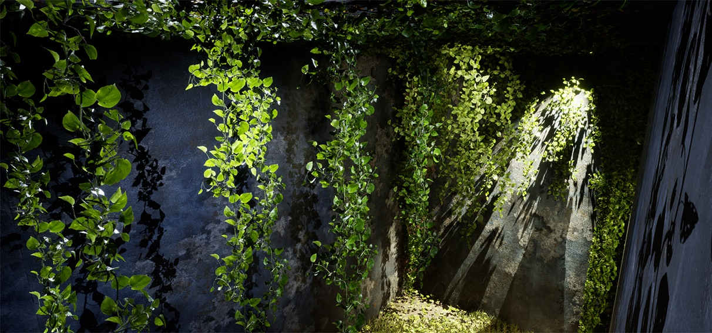

Pierfrancesco Perrone
Composer - Sound Artist
studio sul suono che mi ha attraversato
-
The Red Shoes
2023 - 61'
Coreographer Philippe Kratz
Music Pierfrancesco Perrone
Nuovo Balletto di Toscana - Cristina Bozzolini - Lights Giulia Pastore - Plot Sarah Stroebele - Costume Grace Lyell Video by Emma Scarafiotti -
Il Cielo di Carta
Multi-Sensorial Interactive Installation, Milan Design Week 2023, 24 Microphones and 36 Speakers
Un immersivo percorso multi sensoriale oniro-naturalistico.

Uno spazio notturno sospeso nel tempo, una stanza dove si incontrano la natura, la notte e le stelle. Un abbraccio multisensoriale come quello che riceviamo dalla natura e dalle cose che amiamo. Andare oltre il confine delle mura rendendole vive.

Un paesaggio sonoro naturalistico generativo che viene stimolato dall'interazione degli spettatori tramite l'interazione con tutte le superfici della stanza.
 -
The Loop
Tape Loop tracks
A selection of 4 ambient tape-loops
-
Mixes for Cash
Commercial / Advertising
A selection of music made for...
-
Music
-
Fuoriorario
Label Curation Project
-
Radio
My Selectors on FrittoFM
Fuoriorario - The Radio Show on FrittoFM
-
About
A sound is a perfect metaphor, an allegory in resonance. When heard, its tonal boundaries create an artistic proposition, and when considered without subjective interpretation, it becomes a direct analogy to the origins and limitations of our quest to comprehend the essence of all things.
contacts:
pierfrancescoaudio@gmail.com
www.soundcloud.com/pierfrancescoperrone
@pierfrancescoperrone
-
Read More...
Symphonia Inefficientiae - La sinfonia dell'Inefficienza
Nel tumulto frenetico del mondo moderno, la musica è un richiamo all'arte di perdersi nei dettagli, nel tempo "sprecato", nelle esperienze che non possono essere misurate in termini di produttività. È un inno all'importanza di fermarsi e ascoltare il canto degli uccelli, di abbandonarsi al piacere di una conversazione senza scopo, di immergersi nell'arte senza preoccuparsi del tempo. Questa lotta all'efficienza insignificante è una rivoluzione contro l'idea che tutto debba essere ottimizzato, misurato e valutato secondo parametri astratti. La musica dell'inefficienza celebra l'arte di essere umani, di commettere errori, di cercare la bellezza nella casualità, di creare spazi per la creatività, la contemplazione e l'immaginazione.